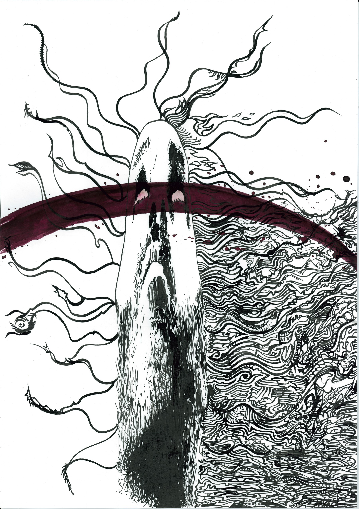
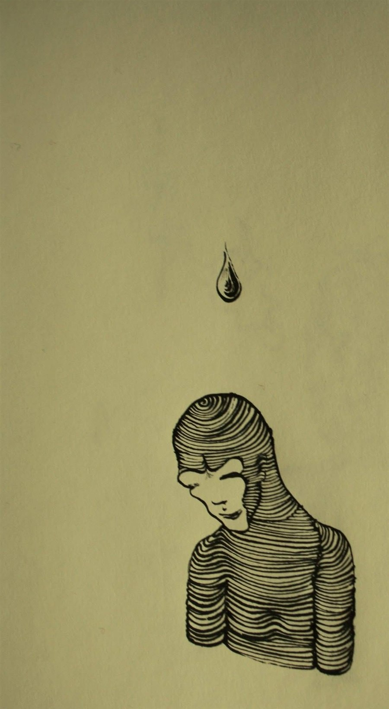

Comodoro Süleyman — muzician, compozitor și desenator, basist și improvizator

Dacă Comodoro Süleyman nu este nimeni, reciproca nu este neapărat adevărată. Comodoro Süleyman este un marinar fără barcă. Este mai ales o idee sau un vis. Rămân muzica și desenele...

Galerie